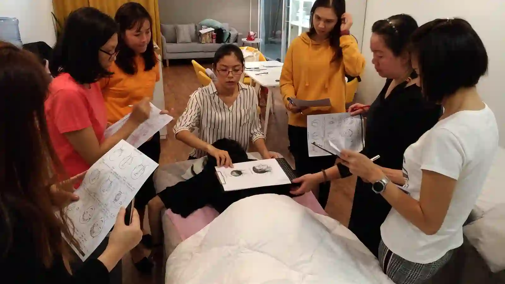

The Bojin Journal · Rituals & routines
How to Clean and Care for Your Bojin Stick

Here's a question I get more than almost any other, and it always comes a little sheepishly: "How often am I supposed to be cleaning this thing?" Usually it means the stick has been sitting on the bathroom counter, picking up oil and dust, for longer than she'd like to admit.
You're not alone if you've been wondering. A tool you press against your face deserves to be clean, and the good news is that keeping a stainless steel bojin stick clean takes less effort than washing a single dish.
Why it matters, without the guilt
Every time you use the stick, it picks up a little of the oil or cream you used for slip, plus whatever was on your skin. Left on the metal, that residue turns slightly sticky and can dull the smooth glide that makes the tool comfortable to use. It's not dangerous, and you don't need to panic about it. A clean surface simply glides better and feels nicer against your skin, which makes you more likely to keep reaching for it.
This is one of the quiet advantages of a stainless steel bojin stick over a porous stone. Steel doesn't absorb anything. Nothing soaks in, so nothing needs scrubbing out.
The simple way to keep it clean
You don't need a special product. Warm water and a drop of the same gentle soap you'd use on your hands or face will do everything you need.
- Rinse it under warm water right after you use it, while any oil is still fresh and easy to lift.
- Add a small drop of gentle soap and rub the whole stick with your fingers, both the broad edge and the rounded tip.
- Rinse thoroughly so no soap film is left behind.
- Dry it with a clean towel instead of leaving it to air-dry, which keeps water spots off the polished surface.
- Store it somewhere dry: a small pouch or a drawer, away from the damp of an open bathroom.
If you only rinse and dry it most nights and do the full soap version a couple of times a week, that's plenty.
A few things worth knowing
Stainless steel is forgiving, but a little care keeps it looking and feeling new for years. Skip anything harsh: no bleach, no abrasive scrubbing pads, no putting it in the dishwasher. None of that is necessary, and abrasives can scratch the polish that makes the glide so smooth. If you ever notice a water spot or a cloudy patch, a soft cloth and a moment of buffing brings the shine right back.
The pouch matters more than people expect. Left loose in a drawer with other metal objects, the stick can pick up tiny scratches over time. A simple cloth pouch keeps that from happening and keeps it easy to grab when you want it.
Honest expectations, and a safety note
A clean tool won't change your results on its own, but it does keep the experience pleasant enough that you actually stay consistent, and consistency is where the gentle, temporary benefits of bojin come from. Think of cleaning less as a chore and more as part of the small ritual.
The honest version of all of this: rinse, dry, tuck it away. Do the soapy wash a couple of times a week and you never have to think harder about it than that.
Quick answers
How often should I clean my bojin stick?
A quick rinse and dry after most uses, plus a gentle soap wash a couple of times a week, is plenty.
What should I use to clean it?
Warm water and a drop of the same gentle soap you use on your hands or face. Skip bleach, abrasive pads, and the dishwasher.
Can stainless steel rust or absorb oil?
No. Steel doesn't absorb anything, so residue sits on the surface and wipes off easily, and quality stainless resists rust with basic drying.
How should I store it?
Dry it fully and keep it in a small cloth pouch or drawer, away from bathroom damp and loose metal objects that could scratch it.
Want my one-page care routine?
A simple checklist for keeping your whole bojin setup clean and ready, plus the free video that walks through a full session.
Watch the free 3-min videoYu-Ting Lan is a Taiwan-based international bojin instructor and the founder of Héhé Studio. She has taught her bojin method to more than a thousand students, from complete beginners to grandmothers, across Taiwan, Hong Kong, and Malaysia.